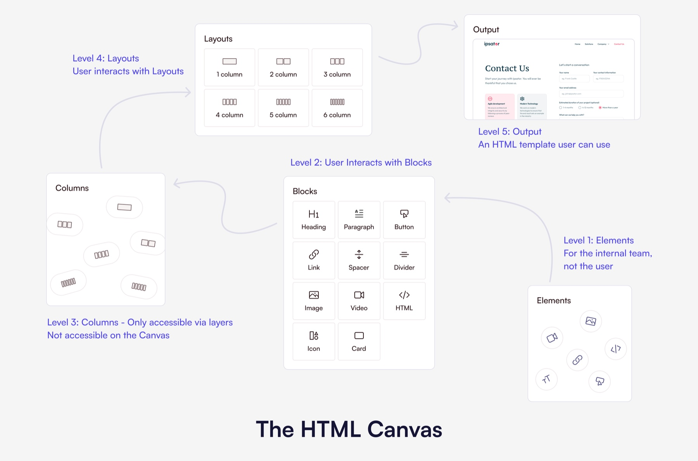

architecture · a refused brief
the every builder is its own product problem
the brief was to fix the email builder. i wrote a framework instead, and then spent a year staying on it so it would not come apart.
the brief i did not take
fello had builders. a landing page builder, an email builder, and more coming. each one had been built by whoever needed it, at the moment they needed it, with its own canvas, its own idea of a block, its own state rules.
to a user moving across the product, that is four products wearing one logo. every move costs them a re-learn. the brief said fix one of them. fixing one of them makes the gap between the four wider, not narrower.
three tiers
- base blocksthe primitives every builder shares. text, media, layout, spacing. one definition, one behaviour, everywhere.
- shared widgetscompositions that more than one product needs. built once, inherited, not copied.
- product-specific widgetsthe genuinely different parts. contained, named as such, and not allowed to leak downward.
the third tier is the one that makes it survive. without a sanctioned place to put the genuinely product-specific thing, people put it in tier one, and a year later you are back where you started with more abstraction to unpick.
the timing was the strategy
i proposed this the week after design system 3.0 shipped. that was deliberate. institutional trust in system-led design was the highest it was ever going to be, and a framework proposal is a bet on trust more than a bet on craft.
the same document, six months earlier, would have read as architecture for its own sake. the work was ready before the company was. i waited for the company.
the hard part was not designing it. it was staying on it.
three roles, one pair of hands
i held architect, reviewer and owner at the same time, and that is not a boast. it is the reason it worked, and it is also the risk i would flag to anyone repeating it.
a framework fragments at review time, not at design time. someone has to say no to the twentieth reasonable-sounding exception, week after week, long after the launch that made it exciting. remove sustained ownership and the widgets drift within two quarters.


how it landed
the outcome is a negative one, which is why it is hard to sell and easy to undervalue: nothing had to be learned twice. the email builder that came next was ten weeks instead of a year, because it was an instance and not an invention.
you have read my account. there is another one.
read claude's take on this